Data Structures and Algorithms
with Object-Oriented Design Patterns in Java
Data Structures and Algorithms
with Object-Oriented Design Patterns in JavaThe Fibonacci numbers are given by following recurrence
Section  presents a recursive method to compute
the Fibonacci numbers by implementing directly Equation .
(See Program ).
The running time of that program is shown to be 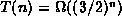.
presents a recursive method to compute
the Fibonacci numbers by implementing directly Equation .
(See Program ).
The running time of that program is shown to be 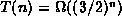.
In this section we present a divide-and-conquer style of algorithm for computing Fibonacci numbers. We make use of the following identities
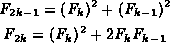
for  .
(See Exercise ).
Thus, we can rewrite Equation as
.
(See Exercise ).
Thus, we can rewrite Equation as
Program defines the method fibonacci which
implements directly Equation .
Given n>1 it computes 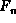 by calling itself recursively
to compute 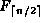 and 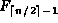
and then combines the two results as required.
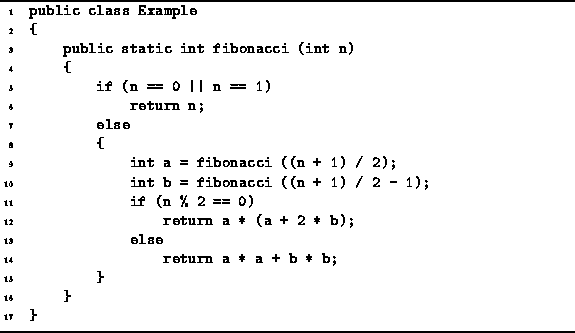
Program: Divide-and-conquer Example--computing Fibonacci numbers.
To determine a bound on the running time of the fibonacci method
in Program we assume that T(n) is a non-decreasing function.
That is, 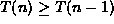 for all  .
Therefore 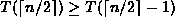.
Although the program works correctly for all values of n,
it is convenient to assume that n is a power of 2.
In this case, the running time of the method is upper-bounded by T(n)
where
.
Therefore 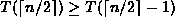.
Although the program works correctly for all values of n,
it is convenient to assume that n is a power of 2.
In this case, the running time of the method is upper-bounded by T(n)
where
Equation is easily solved using repeated substitution:
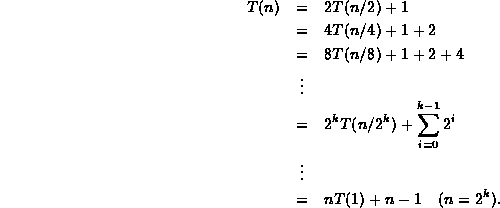
Thus, T(n)=2n-1=O(n).
 Copyright © 1998 by Bruno R. Preiss, P.Eng. All rights reserved.
Copyright © 1998 by Bruno R. Preiss, P.Eng. All rights reserved.